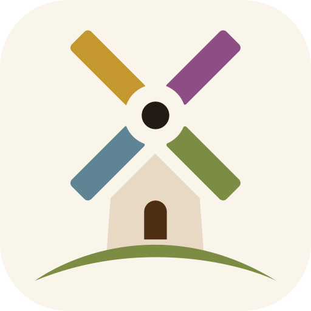
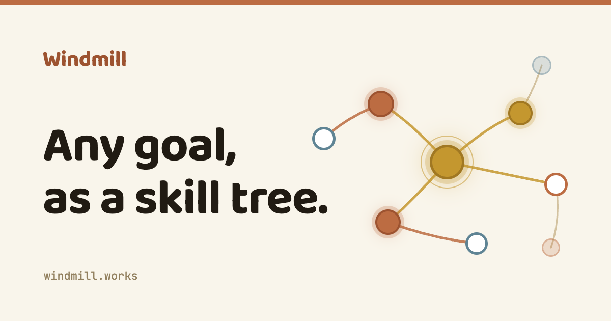

Windmill is a browser-based roadmap tracker that renders any roadmap as an RPG skill tree: steps are nodes, dependencies are branching paths, and finishing one step "unlocks" whatever comes next. A roadmap can be a product launch, a fitness goal, learning a language, or a room makeover — it is not just for software teams.
This document systematizes everything decided about Windmill's identity so far, so you can design a logo, app-icon set, and any supporting brand marks that fit the world the product already lives in. There is no logo today — the sections that follow tell you exactly what to make, the feeling to hit, and the palette and type it must sit beside.
What you're branding, in one read.
The core metaphor is a living skill tree. Every roadmap becomes a branching tree: each step is a circular node ("fruit"), dependencies are curved branches, and completing a step lights up and unlocks the next one. Progress feels like a tree coming into bloom — calm and organic, not a checklist.
Flat, uniform circular discs. Locked → available → in-progress → complete, shown by glow and ring — never by shape.
Soft curved connectors. A branch lights up in its parent's colour once that step is done.
A node's hue marks its kind (six earth tones), independent of how far along it is.
Anyone with a goal that has steps and an order. The copy and visuals stay domain-neutral — the same tree works for a marathon plan, a language, a startup roadmap, or decorating a room. The brand should read warm, capable, and human — a calm tool first, a game second. Lean on the game metaphor lightly; never make it childish.
You described the name as evoking "spinning millstones" — grinding raw goals into something you can actually work through. That association is the seed for a mark, but nothing has been drawn. You are free to interpret it, combine it with the tree/branch metaphor, or propose something better.
The adjectives the whole system is built to hit. A mark has to belong here.
Sun-baked clay, olive, ochre, cream. Every hue is muted toward earth — nothing vivid or "chemical". The signature surface is a warm cream, never cold gray or white.
Vines, branches, fruit ripening. Rounded and natural rather than geometric or techy. Growth over machinery.
Friendly, bold, high-personality type; generously rounded corners; nothing sharp or corporate.
Lots of space, flat colour, no gradients-as-backgrounds, no clutter. One idea at a time.
Things breathe, pulse, and fade — gentle light, never mechanical, bouncy, or flashy. A mark that animates should ease and glow, not spin hard or snap.
Encouraging and a little playful, but not jokey. Understated. The product rewards you quietly.
The deliverables, the sizes, and the rules a Windmill mark must obey.
We need a primary mark that can stand alone (in an app icon, a favicon, a loading state) and a horizontal lockup that pairs the mark with the "Windmill" wordmark. The wordmark today is simply the word set in a rounded display type (see §5) — you may keep that relationship, refine it, or draw a custom wordmark.
1 · Must read on the warm cream canvas (#F9F5EB) and reversed on terracotta (#BC6C42) and on the warm-soil dark theme (#17110A). 2 · A single-colour / monochrome version is required (email with images off, embossing, small favicons). 3 · Must stay legible and recognizable down to 16×16px. 4 · Delivered as a clean vector master (SVG) that we can re-export at any size.
| Asset | Size / format | Where it's used |
|---|---|---|
| Master mark | SVG vector, full-colour + 1-colour | Source of truth; everything re-exports from this |
| Wordmark lockup | SVG horizontal | Site header, marketing, email, docs |
| App icon — requested | 100×100 PNG | The size you asked about — general app / listing use |
| App icon — large | 512×512 PNG | PWA install, store listings, high-DPI |
| App icon — medium | 192×192 PNG | Android / PWA manifest |
| Apple touch icon | 180×180 PNG | iOS home screen |
| Favicon | 32×32 PNG + .ico | Browser tab |
| Social preview | 1200×630 PNG | Open Graph / link unfurl (og-image) |
All raster sizes should export cleanly from the SVG master. Deliver full-colour and single-colour variants of each where it makes sense.
As a stopgap, the identity currently leans on the wordmark plus a Baloo "W" letterform and a six-dot "kinds" motif. Feel free to replace all of it — it's shown so you know the current visual baseline and the exact assets a new mark would slot into.

Current app icon (placeholder). A cream "W" in the rounded display type on terracotta. This is a letterform stand-in, not a designed mark — this is the slot your logo fills.

Current social preview (og-image, 1200×630): wordmark + a live-coloured skill-tree fragment on cream. Note the six-dot kind palette and the soft node glows — that's the world your mark joins.
Warm Tuscan earth. Colour carries meaning: each accent is also a node kind. Use these exact values.
Terracotta is the primary brand colour — if the mark is one colour, it's this on cream (or cream on this). Every hue is muted toward earth; there are no pure/neon colours anywhere. Backgrounds are flat — the only gradient in the whole system is a single terracotta→gold progress fill. A full dark "night sky" theme also exists (near-black #0D0B07 canvas, brighter glowing accents), so the mark must survive on dark too.
Two rounded families + a mono. These are the type the mark and wordmark live beside.
Baloo 2, Nunito, and JetBrains Mono are Google Fonts substitutes chosen for a "warm rounded sans" feel — they are not licensed brand fonts. If a custom or licensed typeface is part of the identity you propose, we can adopt it. A custom-drawn wordmark is welcome.
Context so anything you make — especially an animated mark — matches how Windmill already behaves.
Encouraging, a little playful, never jokey — a calm, capable tool first. Sentence case everywhere (no ALL-CAPS shouting). Second person ("your roadmap", "you unlock"). Light game metaphor: "step", "unlock", "plant". No emoji, anywhere.
Soft and glowy — pulses, fades, gentle breathing light. Never mechanical, bouncy, or flashy. Exactly one thing loops at a time (a "calm ceiling"). If the mark animates, it should ease and glow, not hard-spin or snap.
Simple 2px-stroke line icons (Lucide) throughout the product. A logo mark can be more crafted than these, but the two should feel like the same family — clean, rounded, unfussy.
Perfect circles for nodes; generously rounded corners elsewhere (8–32px). Soft, warm-tinted shadows; a gentle coloured glow rings "complete" fruit. Round, organic, never sharp.
Make Windmill a mark that feels like a warm thing quietly coming into bloom — earthy, rounded, confident, and calm — that works as a one-colour glyph at 16px and as a glowing icon on a near-black screen. Start from "spinning millstones" and the living skill tree, and take it somewhere we haven't thought of.
Deliverables land in the project's assets/ folder (SVG master + the PNG/ICO exports above) and are swapped in everywhere the wordmark currently stands. Questions or WIP — send them over any time; this is a living system.